A · Current implementation
Actual site captures at 500×600 CSS px, DPR 1. The 48px statement is clipped, and cards overlap it. French statement bottom: y=703px; English: y=648px.
Initial view — statement clipped
Current cards — overlap with statement
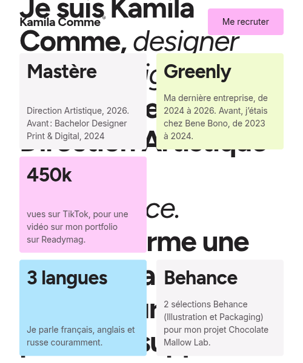
Initial view — statement clipped
Current cards — overlap with statement
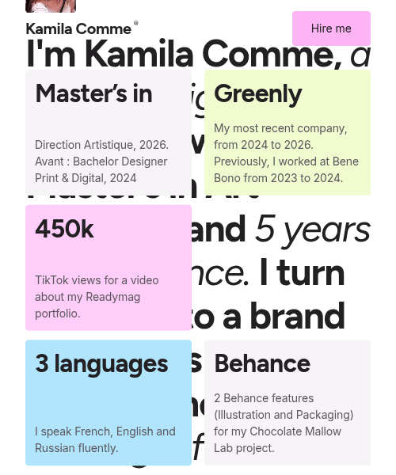
B · Proposed narrow-short reflow
These are successive Chromium captures of the actual About section. The proposal scrolls the existing 48px introduction through view, clears it, then raises the same five cards. The slider-like sequence is presented as frames; open this page locally to inspect each frame at 500×600. No website code was changed for this option.
French scroll sequence
Scroll progress 0.00 viewport · window.scrollY 4532px
Scroll progress 0.26 viewport · window.scrollY 4688px
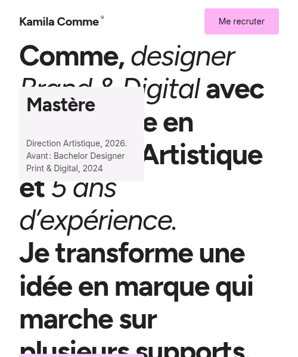
Scroll progress 0.50 viewport · window.scrollY 4832px
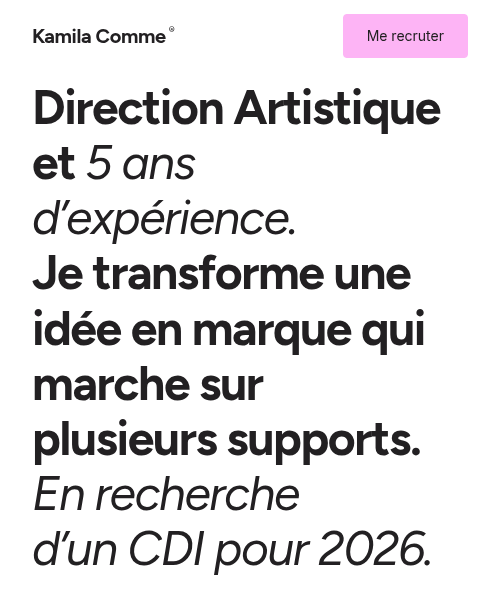
Scroll progress 0.62 viewport · window.scrollY 4904px
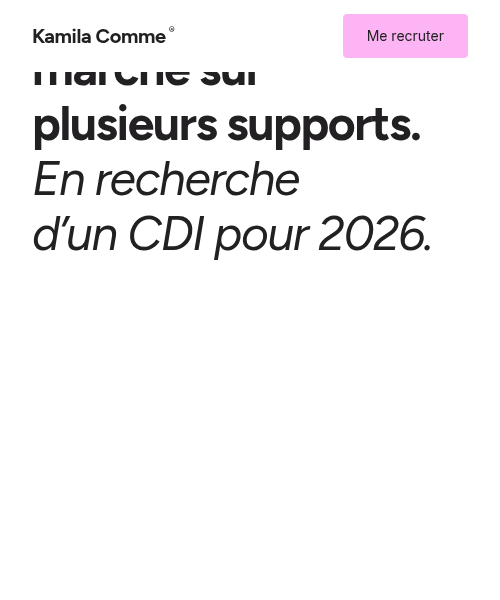
Scroll progress 0.75 viewport · window.scrollY 4982px

Scroll progress 1.02 viewport · window.scrollY 5144px
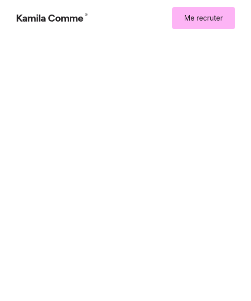
Scroll progress 1.08 viewport · window.scrollY 5180px
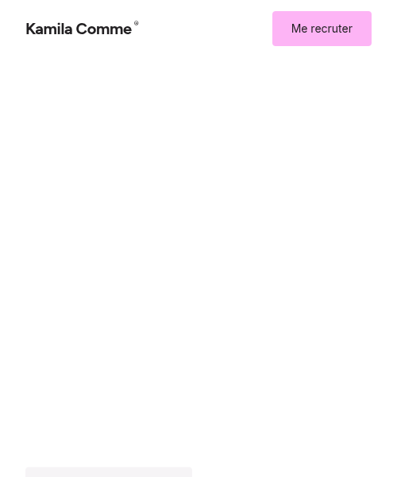
Scroll progress 1.22 viewport · window.scrollY 5264px
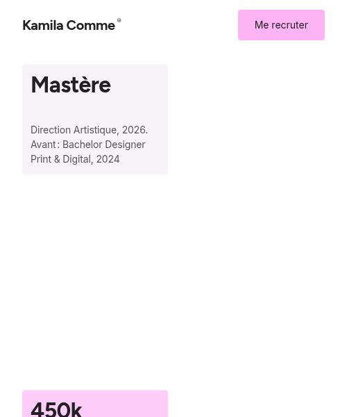
Scroll progress 1.48 viewport · window.scrollY 5420px
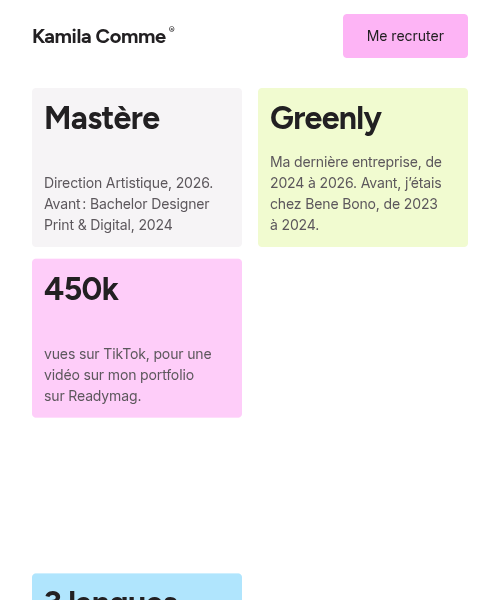
Scroll progress 1.72 viewport · window.scrollY 5564px

Scroll progress 1.96 viewport · window.scrollY 5708px
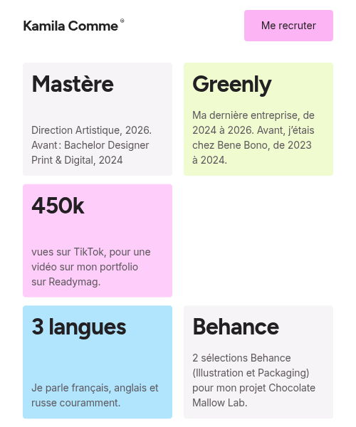
Scroll progress 2.08 viewport · window.scrollY 5780px
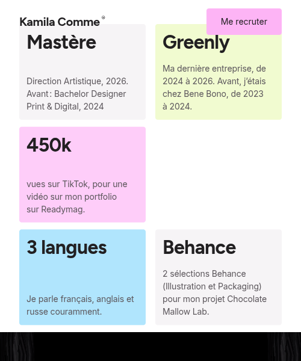
English scroll sequence
Scroll progress 0.00 viewport · window.scrollY 4513px
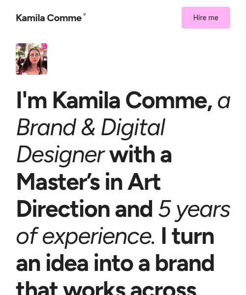
Scroll progress 0.26 viewport · window.scrollY 4669px
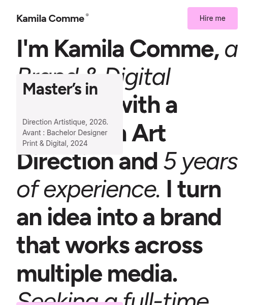
Scroll progress 0.50 viewport · window.scrollY 4813px
Scroll progress 0.62 viewport · window.scrollY 4885px
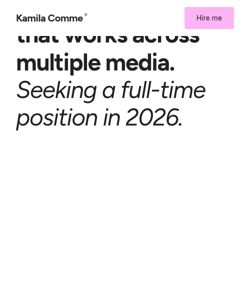
Scroll progress 0.75 viewport · window.scrollY 4963px
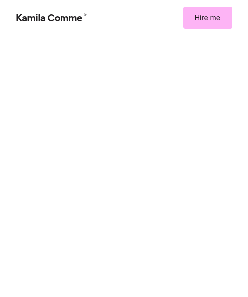
Scroll progress 1.02 viewport · window.scrollY 5125px

Scroll progress 1.08 viewport · window.scrollY 5161px
Scroll progress 1.22 viewport · window.scrollY 5245px
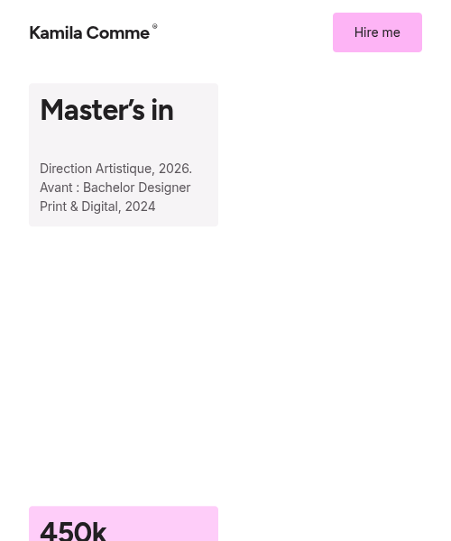
Scroll progress 1.48 viewport · window.scrollY 5401px
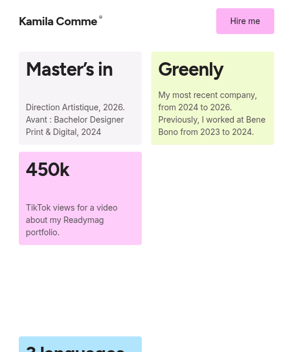
Scroll progress 1.72 viewport · window.scrollY 5545px

Scroll progress 1.96 viewport · window.scrollY 5689px
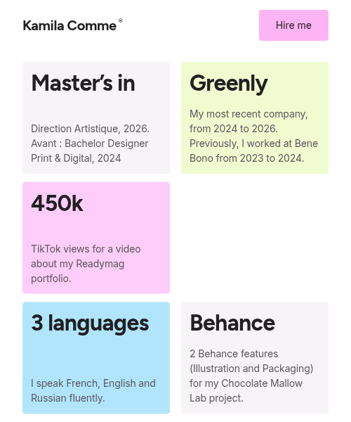
Scroll progress 2.08 viewport · window.scrollY 5761px
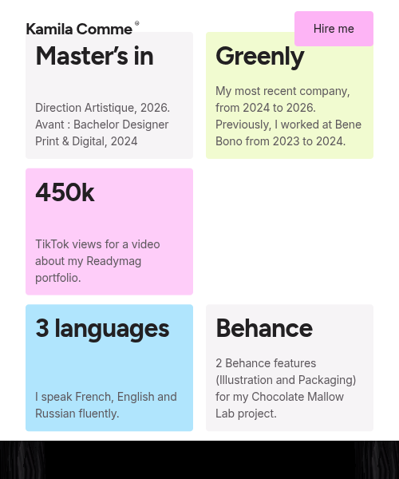
Current normal-height tablet composition
Current site, unchanged at 834×1112 CSS px, French and English. This is not the proposed reflow.
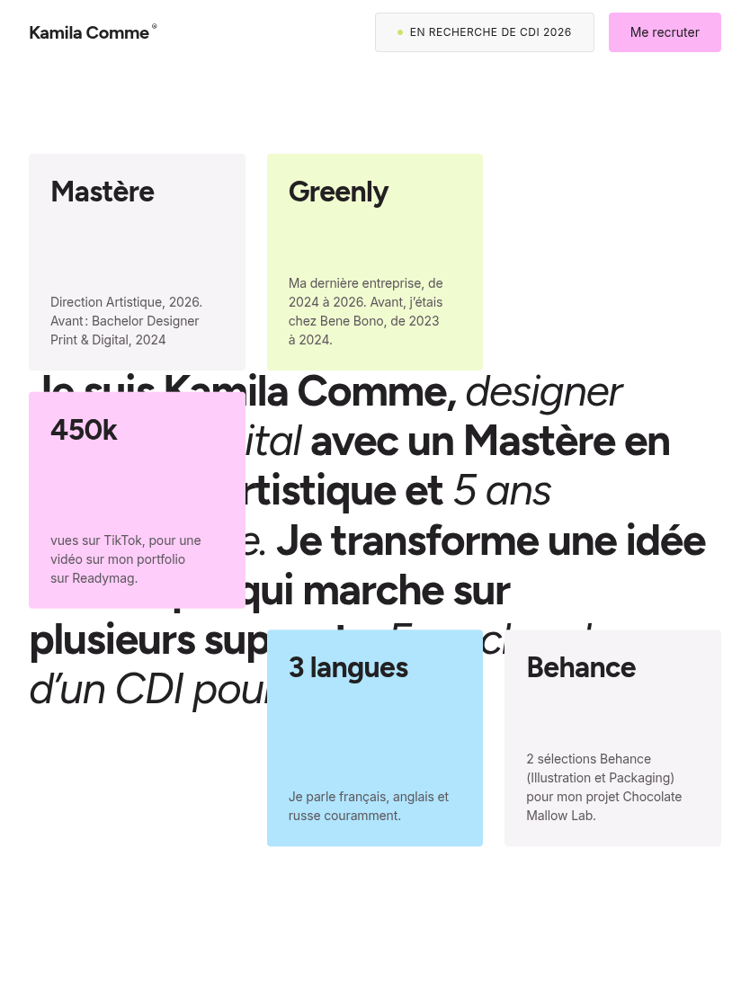
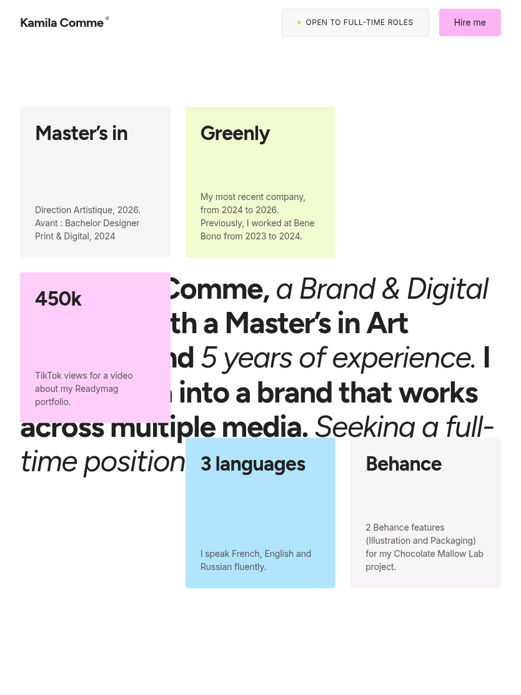
Capture details
Current Phase 5 worktree commit: e2b2eea6a21c8870de447f17689bd085e3f99e1f. Capture environment: Chromium, headless capture, DPR 1. The proposal is a visual experiment only and is not an approved or adopted design. The proposed scroll progress p means the page is positioned at About’s top plus p × viewport height. The original section latch and all five existing card elements were retained in the browser demonstration.
Original PNG captures are stored beside this page under captures/. This review branch contains no application source, tests or historical screenshot references.